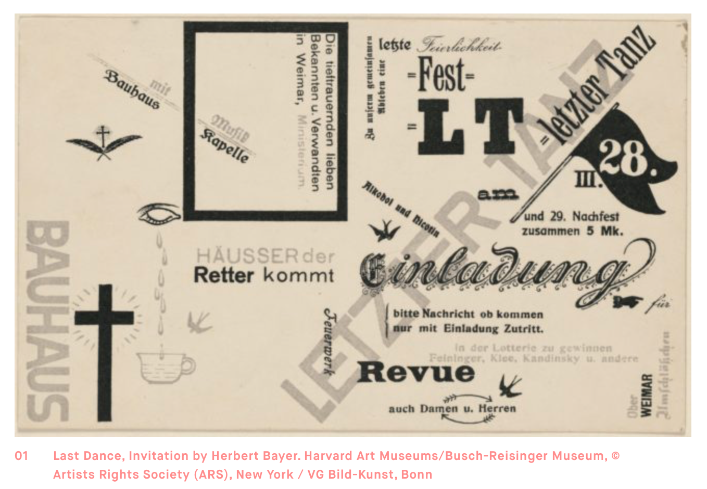
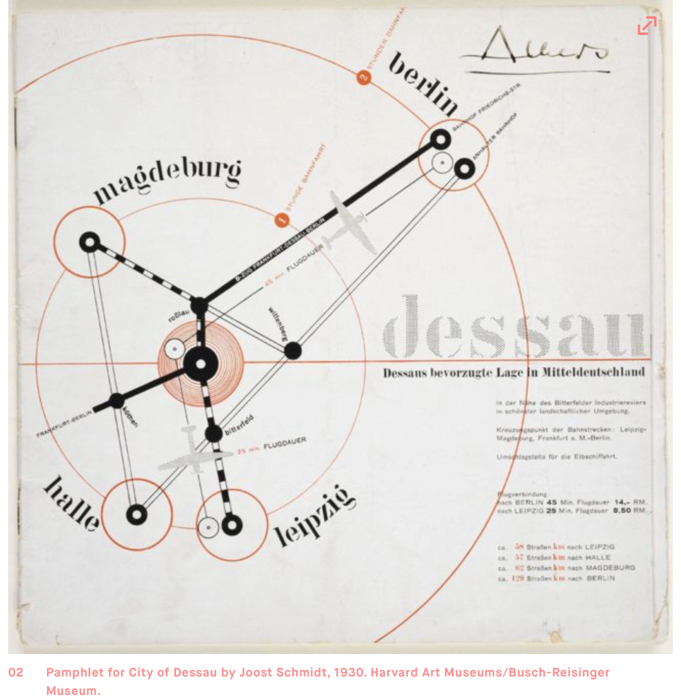
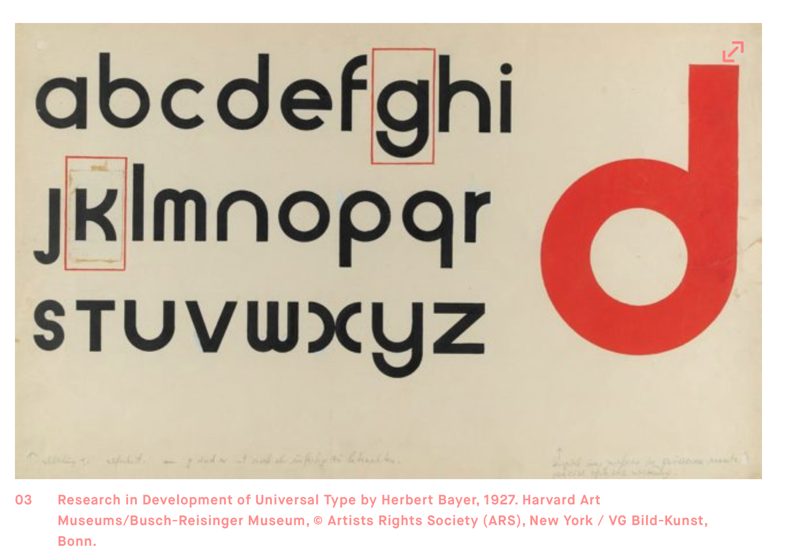
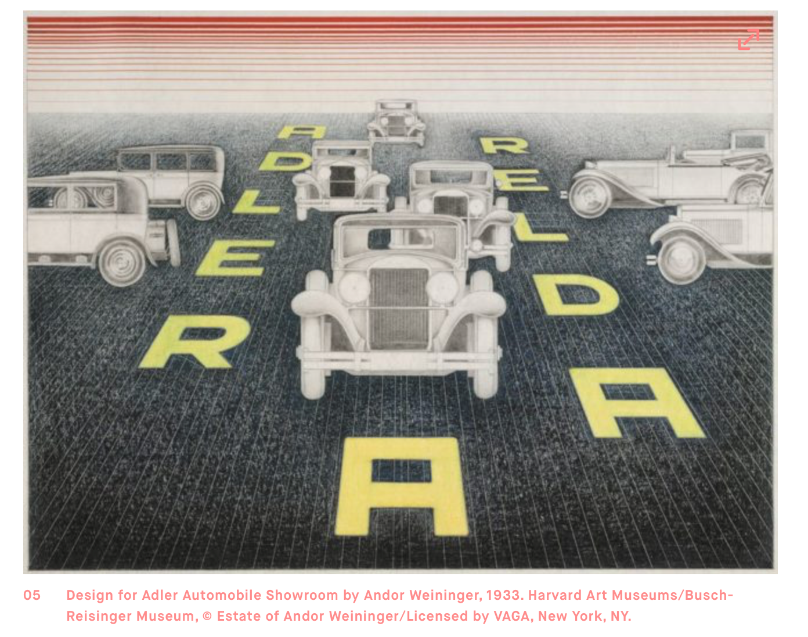

|  |
This invitation by Herbert Bayer for the Bauhaus’s last dance in Weimar, before its move to Gropius’s iconic building in Dessau, is also an ironic last gasp for Dadaistic disorder. With the move, the Austrian student graduated to the role of Bauhaus master, and the school rebranded along stricter, rationalist lines and a greater emphasis on typographic sobriety. |
|  |
This back cover of Schmidt’s brochure makes the industrial city of Dessau look like the center of the world, or at least Germany. Schmidt indicates travel distances to other cities via car, train, and—in a modern sign of the times—plane, with concentric circles radiating outward. (The front cover features a photomontage of local highlights floating over an aerial view of the city). |
|  |
You can see the working process in Bayer’s large (almost 15 x 24”) specimen of Universal, his famous single-case, geometrically derived typeface: there’s the indent of the compass used to construct the letterforms, the broad strokes in gouache, and the collaged corrections to the ‘g’ and ‘k’ (his handwritten legend indicates that these are ‘not yet finished’). |
|  |
Though not well known, the Hungarian-born Andor Weininger was a model student of the early Bauhaus, active in architecture, painting, and stage design, and a fixture of the school’s jazz band. Andor and his wife Eva later collaborated on the design of a showroom for Adler automobiles (the commission came through Gropius, who designed cars for Adler, and tapped Bayer to create a prospectus). Here Weininger stages an intersection of exquisitely rendered cars in an abstract, perspectival space, the flooring picked out by incised lines. The Adler name reads forward and backward, though faint markings show that Weininger had considered a different orientation. |